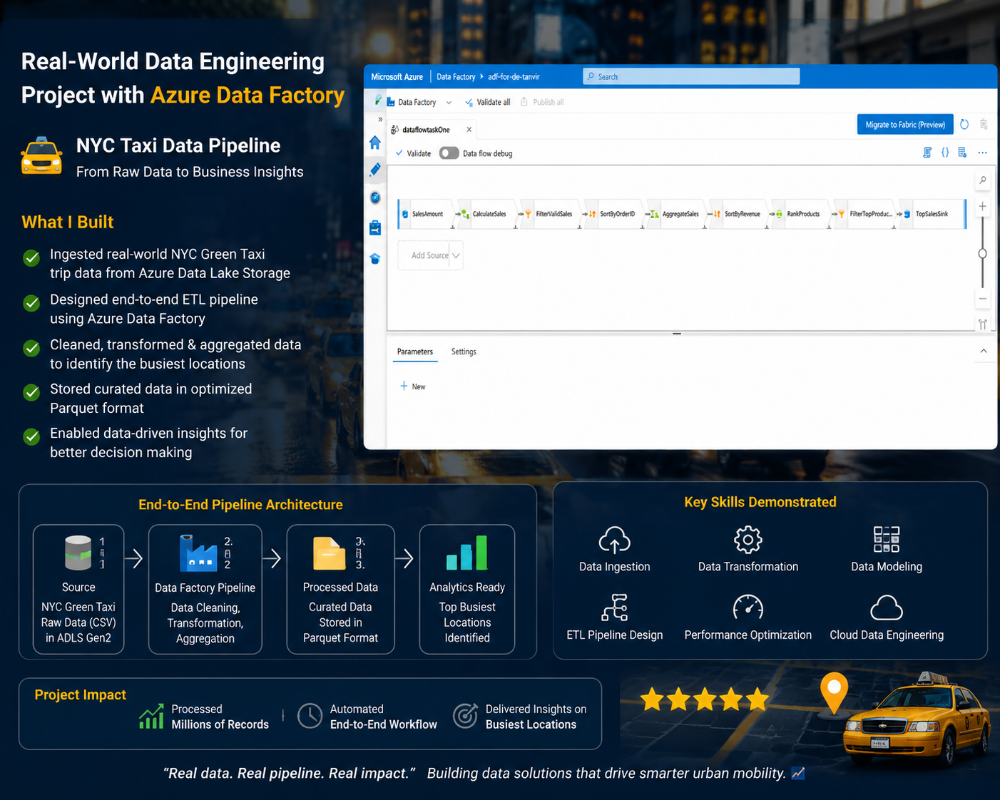

Ingest
Azure Data Factory orchestrates the ingestion workflow.
Case study · Azure
How taxi trip data moves from source files into cloud storage and SQL-based analytics.
The objective
The project builds a data workflow for NYC taxi trip records. The goal is to organize the source data, make it available for SQL analysis, and prepare it for questions about trips, fares, distances, and payment types.
Project evidence
A look at the output built on the prepared trip data.

Architecture
Azure Data Factory orchestrates the ingestion workflow.
Source data is organized in Azure Data Lake Storage for downstream access.
Synapse SQL queries the data to explore analytical patterns.
What I explored
How do trip counts vary by payment type?
What are the total fares and tips by category?
How can trip duration and distance be analyzed?
How can SQL queries support reporting requirements?
Reflection
This project moves raw trip records into a queryable analytical layer on Azure. Future iterations could add automated data-quality checks, performance tuning for larger trip volumes, and scheduled refreshes.